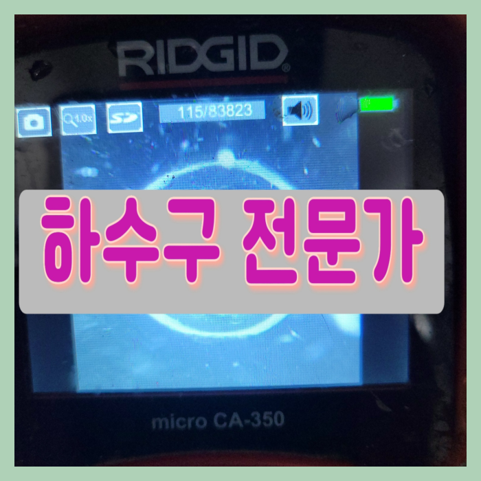
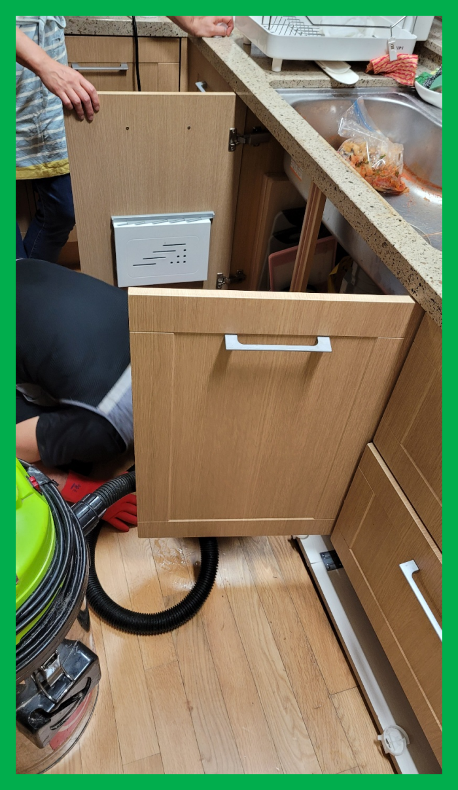
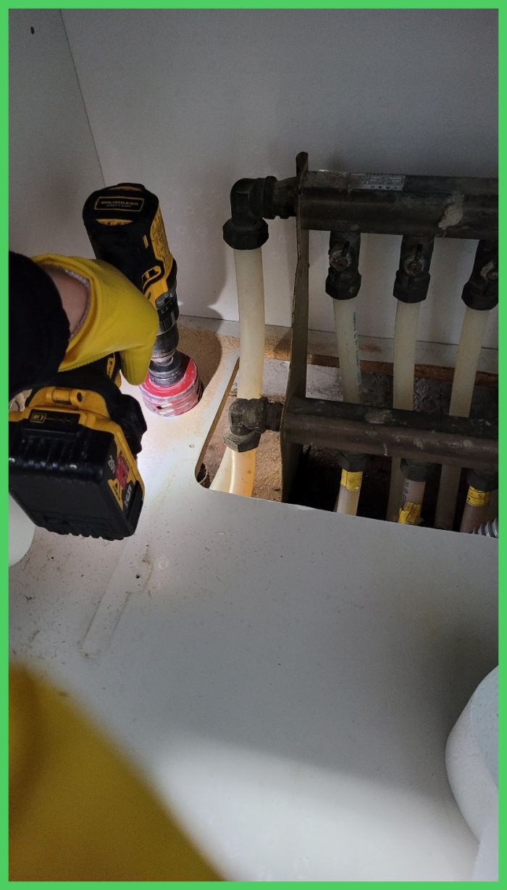
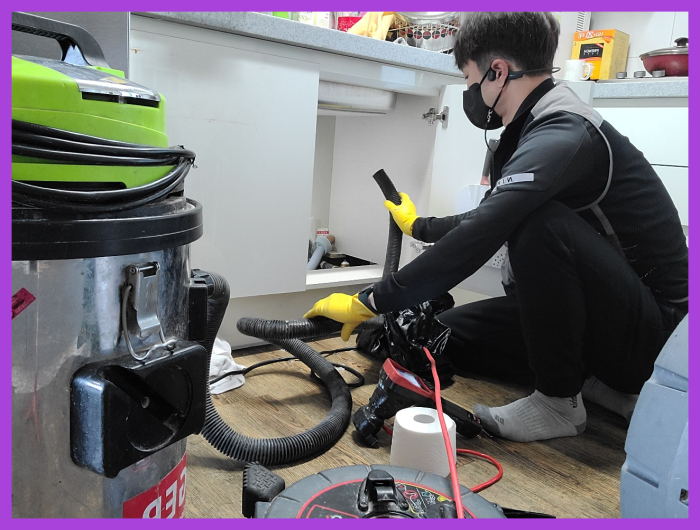
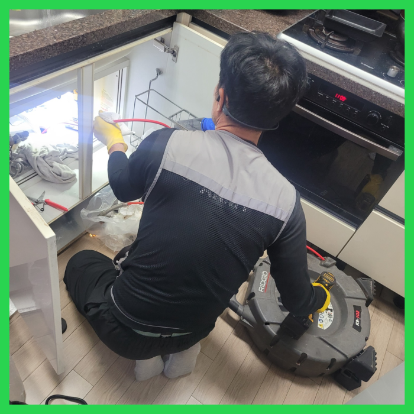
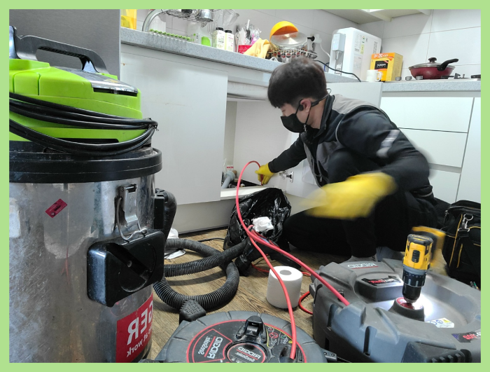
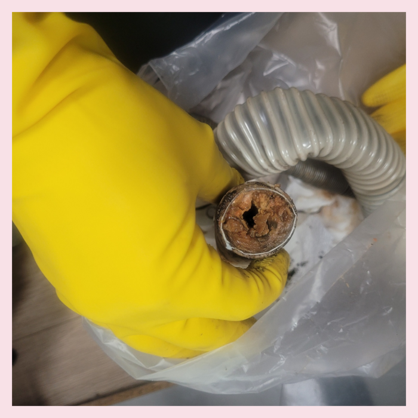

🏠 구월동 싱크대배수관막힘 만수동 배수구역류 배관기름때 청소 설비
용인 싱크대막힘 전문 시공 후기

📋 작업 개요
- 위치: 용인
- 서비스 유형: 싱크대막힘, 변기막힘, 하수구막힘, 배관막힘, 누수수리, 역류해결, 뚫는업체, 배관청소, 고압세척
- 작업 일시: 2023. 12. 18. 18:36
- 업체명: 하수구수사대 (010-5615-2118)
🔍 문제 상황
반갑습니다!
설비전문업체 "하수구수사대"를 찾아주셔서 감사드립니다.
막상 도착해 보니 외부 문제도 있었기에 외부 하수관 작업까지 진행해 드렸습니다. 저희는 전화상담을 통해 어느 정도 하수관막힘의 심각함을 예상할 수 있는데요, 이번 현장은 고객님이 물을 사용할 때마다 외부 하수관에서 물이 새는 모습이 보인다고 하셨습니다.
구월동 싱크대배수관막힘 만수동 배수구역류 배관기름때 청소 설비
문제가 발생하면 빠른시간에 출장 작업이 가능한 하수업체와 최신장비를 갖춘 업체를 똑똑하게 선정하셔야합니다. 배관 초입을 비롯하여 배관 내부에 이르기까지 세세하게 보는게 가능한 배관내시경이 기본장비인데 이 장비조차 없는 업체들이 있으지 조심하세요.

🔎 원인 분석
💡 전문가 진단: 구월동 싱크대배수관막힘 만수동 배수구역류 배관기름때 청소 설비
필요한 시공만 하기에 작업내내 고객님과 상의를 많이 한후 그에맞게끔 배출관막힘 작업하고 있습니다. 그로인해 얼마든지 맡겨만 주시면됩니다. 배출관를 뚫을때 변수가 워낙 다양하기 때문에 모든 배출관배관을 파악한 후 무슨 장비를 이용할지 선택후 배관작업을 하기에 본격적으로 작업하기전 비용을 알려드리고 있어요.
또 약품을 잘못사용하면 막힌 퇴수 상황을 더 악화시키고 많이 쓰게되면 배관이 더 안좋아서 배관교체를 해야할수도 있으니 쓰시려 할때는주의해야 합니다.
여러분이 생각하실 때 하수도막힘이 어느곳을 골라야 재빠른 해결이 가능하며 보다 심각한 피해를 입지 않고 신속한 처리가 되는지에 대해서 알려드릴테니 조금이나마 도움이 되시기를 바랍니다.
수많은 분들이 업체들을이 이용했어도 또 하수막힘증상이 발생되어 반복적으로 더 돈을 내고 청소하게 되는것을 잘못 지여져 있는게 원인이 아닌 똑바로 세척하지 않은 것 때문입니다.
외부 이물질이 원인인 경우 눈으로 보이는 배관이 막힌 것인지 아니면 벽 안쪽의 문제인지를 정확하게 파악을 해서 해결을 해야 합니다. 퇴수 막힘은 전문 업체를 통해서 해결을 하시는 것이 필요하며 퇴수막힘이 발생을 하면 망설이지 마시고 전문 업체 쪽으로 연락해 주시기를 바랍니다.
퇴수뚫는 작업을 반복하면서 기름 슬러지를 말끔히 제거를 하면서 석션을 해주니 덩어리지거나 굳어서 고정된 오물들이 정말 많이 배출되었는데요. 퇴수 내부에는 마지막으로 배관 내시경을 통해서 다시 한번 전체적인 검수를 진행하였습니다.

🔧 작업 과정
이번에 배관 배관 상태를 살펴보니 일부 구간만 막혀있는 것이 아니었습니다. 대부분의 경로에서 이물질이 쌓여서 슬러지를 이루고 있는 것을 확인할 수 있었는데요,
멈추지 않고 더 깊숙하게 카메라를 진입시켜 보았더니 오염물질 외에도 석회까지 달라붙어 있어서 배수관배관이 완전히 막힌 상태가 확인되었습니다. 이렇게 막힌 위치와 상태까지 명확하게 파악해야 적합한 배수관장비를 선택해서 배관을 뚫는 작업을 실시할 수 있습니다.
퇴수전문업체를고르시는게 어째서 꼼꼼해야되냐면 제대로뚫기위해서인데요.의뢰하신업체가 잘못하는곳이면 대충보기만하고 가버리고 잠시동안 물이흐르게하고 나몰라라하기도해요.
배수관들은 시간상관없이항상 물샘증상이나타나기에 쉬는날에도 방문하고있답니다.예기치못하게 배관막혀버려서 만지시다가 더나쁜상황으로 만드시지마시고 베테랑인 저희팀원을통해 답답하신마음을 해결하길바랍니다.
서둘러서 아무거나부으시거나 장비를무작정넣는다면 하수도모양에따라서 크랙이생겨날수있어서 손쓸방법이 없을수도있습니다.
어떠한것보다 문제가발생하면 사용할수없어서 평소에생활이 불편해집니다.배수관역류를 안해야하지만 그렇게안된다면 상태가심각해집니다.
아주 작은 기름과 이물질들이 서서히 쌓여서 이런 돌이 되었다니 믿기지 않는다던 고객님께 충분히 해결 방법을 설명해 드리고 바로 퇴수구뚫는 작업에 들어갔습니다.
10년 이상의 경력자들이 다년간 쌓아온 여러 현장 경험을 통하여 누구보다 철저히 원인을 조사하고 분석해 완벽한 해결을 해드리겠습니다. 계속되는 반복 막힘에 지쳐계시다면 저희를 불러주세요. 믿고 맡길 수 있는 배관 청소입니다.


✅ 작업 완료
배수구전문 장비가 있다고 모두가 같은 작업 결과를 내는 게 아닙니다. 배수구업체마다 다르기 때문이지요. 저희는 배수구배관에 이물질이 남아있지 않게 작업을 하고 있습니다. 만일 지금 변기 사용에 불편함이 있고, 막힘이 심해서 생리현상 해결에 한계라면 바로 문의하세요.
믿음이 가신다면 상단 이미지를 눌러 전화상담 먼저 받아보시면 후회 없는 결정을 하시는데 도움을 드리겠습니다!
#하수구막힘 #하수구뚫음 #하수구역류 #씽크대막힘 #싱크대역류 #오수관막힘 #하수구청소 #욕실하수구막힘 #변기막힘 #하수구뚫는비용 #싱크대수리 #화장실막힘




⚠️ 베란다 누수 및 방수 관리 방법
- ✅ 비가 많이 올 때 창틀 주변이나 아래층 천장에 얼룩이 생기는지 정기적으로 확인해 보세요.
- ✅ 우수관 주변 실리콘 마감이 들뜨거나 깨진 틈새가 있는지 손상 여부를 수시로 체크하세요.
- ✅ 베란다 바닥 타일의 줄눈(메지)이 소실되면 그 틈으로 물이 침투하여 누수가 유발됩니다.
- ✅ 누수 의심 증상 발견 시 방치하면 아래층 손실이 커지므로 즉시 전문가의 진단을 받으십시오.
💡 핵심 정리
- 확실한 장비 작업(내시경 점검 및 샤프트 스케일링)으로 원인을 뿌리 뽑습니다.
- 작업 후 1년 이내에 동일한 부위 재발 시 100% 무상 A/S 서비스를 보장합니다.
- 서울 · 경기 · 인천 전 지역에 24시간 언제든 긴급 출동할 수 있도록 항시 대기 중입니다.
❓ 자주 묻는 질문 (FAQ)
🚨 용인 싱크대막힘 문제로 고민이신가요?
정확한 원인 진단과 확실한 시공으로 재발 없는 해결을 약속드립니다.
24시간 긴급 출동 | 서울 · 경기 · 인천 전지역 | 1년 내 재발 시 무상 A/S